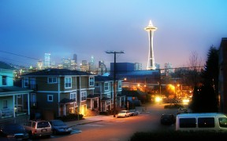
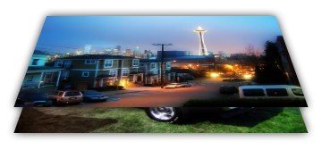
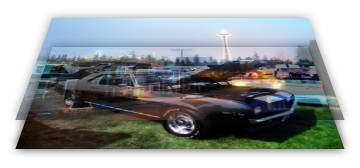
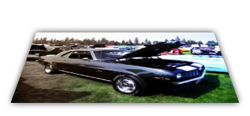
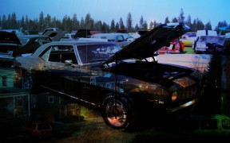
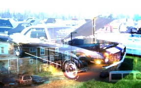
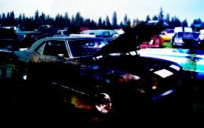
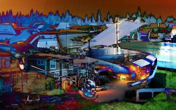
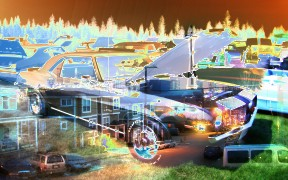
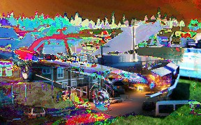

Layers and Blend Modes
Paint.NET allows you to use layers and blending modes as the foundation for composing images.
Layers
For this discussion the following two images will be used for the background layer and for the 1st layer that is placed on top of the background layer:
|
Background Layer - Picture of a Classic Camaro |
 Layer 1 - Picture of Seattle |

You may think of "layers" as a stack of transparency slides that, when viewed together, form a complete image. Paint.NET displays this stack as if you were viewing it from the top and with no perspective (layers do not get "smaller" when they are closer to the bottom of the stack, which would place them "farther away"). To better visualize how layers work, it may help if we view the layer stack from the side instead of from the top:

Pixels and Transparency
Every layer in Paint.NET is composed of pixels which are stored in the RGBA format. The RGB part stands for red-green-blue, and is used to store traditional color intensity. The "A" is for alpha and is used to store information about the transparency of a pixel. This alpha value may range from 0 (completely transparent) to 255 (completely opaque). (Other software may refer to this as ranging from 0% to 100%.) If a pixel is transparent, then pixels from the layers below will show through. Paint.NET uses a technique called alpha compositing to be able to display a layered image on a standard computer monitor.
However, transparent pixels cannot be displayed on a computer monitor. In order to simulate this Paint.NET uses a checkerboard pattern, which looks like this:
If you see this then it means that part of your image is transparent -- the checkerboard pattern is not actually part of the image. You may think of the checkerboard pattern as a virtual background layer, or "layer zero," which is always below all layers that are shown in the Layers window. However, as previously mentioned, it is not actually part of the image. If you save the image and then view or load it with other software then the checkerboard pattern will not be there (unless, of course, if that other software also uses a checkerboard pattern to simulate transparency).
Layers and Opacity
While every pixel has transparency information associated with it, every layer also has an associated opacity value. The two terms are similar and in most cases can be treated as the same. You may think of a layer's opacity value as a "dimmer" for the alpha values of every pixel in the layer.
For example, if we take the top layer and adjust its opacity from 255 gradually down to 0, we will get the following images, shown as both conceptual stacks and as it would be shown on the computer monitor:
|
Layer 1 at 255 opacity (100%) |
|
 Layer 1 at 128 opacity (about 50%) |
|
 Layer 1 at 0 opacity (0%) |

Blend Modes
A layer's blend mode specifies how it is blended with the layers below it. To change a layer's blend mode, click on the respective layer and then open its Properties (via the Layers menu, the Properties button, or by double clicking the layer). The following dialog will be shown:

Not all blend modes are easy to understand in classic or intuitive terms, and because of this we recommend that you experiment and make use of the forum for asking questions and getting tips. Each blend mode is described below along with an image composed of the two layers discussed previously, but with the respective blend mode selected and the opacity set to 255.
In the discussions below, the term composition will be used. This refers to the result of blending all of the layers below the current layer which is being discussed. The "final" composition is what you see on the screen while working with the image. However, for this discussion we need to refer to the composition as it is being composed, layer by layer.
Normal
This is the default and standard blend mode. Each pixel in the layer is blended with the composition depending on its alpha value.
Multiply
Each pixel component's intensity is multiplied with the pixel value in the composition. The result of using this blend mode is always pixels that are darker than the original. White pixels have no effect and are thus effectively transparent.

Additive
Each pixel's color intensity is added to the intensity of the pixel values in the composition. This will always brighten pixels in the composition, except for pixels that are completely black which will be effectively transparent.

Color Burn
This blend mode has the effect such that dark pixels are made darker. Lighter pixels must be blended with other lighter pixels in order to remain bright.

Color Dodge
This can be thought of as the opposite of Color Burn. Lighter pixels are kept light, whereas darker pixels must be blended with other dark pixels in order to remain dark.

Reflect
This blend mode can be used for adding shiny objects or areas of light.

Glow
This is the reverse of the Reflect mode: it works the same as swapping the layer positions and using Reflect.

Overlay
This is a combination of Screen and Multiply depending on the intensity of the layer pixel. For darker colors, this acts like Multiply. For lighter colors, this acts like Screen.

Difference
The counterpart to Additive. The layer pixel's intensity is subtracted from the composition pixel's intensity resulting in darker colors. Since this can produce a negative intensity, which is not possible to display, the absolute value is used. Thus, both "white minus black" and "black minus white" will both produce white. This is quite often useful when using the Clouds effect.

Negation
At first glance this seems similar to Difference, but it actually produces the opposite effect. Instead of making colors darker, it will make them brighter.

Lighten
The lighter pixel of either the layer or the composition is used.
Darken
The darker pixel of either the layer or the composition is used.

Screen
This can be thought of as the opposite of the Multiply blend mode. It is used to make pixels brighter, with black being effectively transparent.

Xor
This is short for "exclusive OR", which is an advanced blending mode that is primarily used for image analysis and not for drawing or image composition.

Copyright © 2007
Rick Brewster, Tom Jackson, and past contributors. Portions Copyright
© 2007 Microsoft Corporation. All Rights
Reserved.